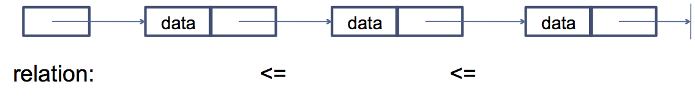

enum [enumName] {name[, name]};class Material {
public:
enum MaterialType { wood, glass, steel, concrete };
};
void main() {
Material::MaterialType mat1;
Material::MaterialType mat2;
int value;
mat1 = Material::wood;
mat2 = Material::steel;
mat1 = mat2;
mat2 = static_cast<Material::MaterialType>(Material::steel + Material::concrete);
value = mat1;
value = Material::glass;
}
class Material {
public:
enum MaterialType { wood = 4, glass, steel = 2, concrete = -1 };
};
void main() {
Material::MaterialType mat1;
Material::MaterialType mat2;
mat1 = Material::glass;
mat2 = Material::steel;
}
friendclass A {
private:
int m_value;
public:
void setValue(int val);
friend int getValue(A& obj); // not a member!!
};
int getValue(A& obj) { // doesn't belong to a class!!
return obj.m_value;
}
int main() {
A obj;
obj.setValue(10);
cout << obj.m_value << endl; // error
cout << getValue(obj) << endl; // OK
}
class A {
friend class B;
private:
int m_value;
};
class B {
public: void Calc(A& obj) {
obj.m_value = 10;
}
};
return-type [class-name::]operator#(arg-list){}Overloadable operators
+, -, *, /, =, <, >, +=, -=, *=, /=, <<, >>, <<=, >>=, ==, !=, <=, >=, ++, --, %, &, ^, !, |, ~, &=, ^=, |=, &&, ||, %=, [], (), ,, ->*, ->, new, delete, new[], delete[]
class Complex {
private:
double m_real;
double m_imaginary;
public:
Complex(double real, double imaginary) : m_real(real), m_imaginary(imaginary) {}
friend Complex operator+(Complex &c1, Complex &c2);
};
Complex operator+(Complex &c1, Complex &c2) {
Complex temp;
temp.m_real = c1.m_real + c2.m_real;
temp.m_imaginary = c1.m_imaginary + c2.m_imaginary;
return temp;
}
class Complex {
private:
double m_real;
double m_imaginary;
public:
Complex(double real, double imaginary) : m_real(real), m_imaginary(imaginary) {}
Complex operator+(Complex &c);
};
Complex Complex::operator+(Complex &c) {
Complex temp;
temp.m_real = m_real + c.m_real;
temp.m_imaginary = m_imaginary + c2.m_imaginary;
return temp;
}
class Complex {
private:
double m_real;
double m_imaginary;
public:
Complex(double real, double imaginary) : m_real(real), m_imaginary(imaginary) {}
Complex operator+(int value);
};
Complex Complex::operator+(double value) {
Complex temp;
temp.m_real = m_real + value;
return temp;
}
int main(){
Complex c1(1,2), c2(4,5);
c1 = c1 + c2;
c1 = c1 + 2;
c2 = 2 + c1;
return 0;
}
class Complex {
public:
void operator=(Complex &c);
void operator=(double value);
};
void Complex::operator=(Complex &c) {
m_real = c.m_real;
m_imaginary = c.m_imaginary;
}
void Complex::operator=(double value) {
m_real = value;
}
int main(){
Complex c1(1,2), c2(4,5), c3(6,10);
c1 = c2; // Complex::operator=(Complex &c);
c1 = c1 + 2; // Complex::operator=(double value);
c1 = c2 = c3; // Error
return 0;
}
class Complex {
public:
bool operator==(Complex &c);
void operator>(Complex &c);
void operator<(Complex &c);
};
bool Complex::operator==(Complex &c) {
return (c.m_real == m_real && c.m_imaginary == m_imaginary);
}
int main(){
Complex c1(1,2), c2(4,5);
if(c1 == c2){}
if(c1 > c2){}
if(c1 < c2){}
if(c1.operator<(c2)){} // Call explicitly
return 0;
}
class Complex{
public;
Complex& operator++() { ... } // prefix ++
Complex operator++(int dummy) { ... } // postfix ++
};
void main(){
Complex c1(1,2), c2(4,5);
c1++;
c2 = ++c1;
}
[] Operator
type class-name::operator[](int idx) { }[] Operator
class Stack{
public:
Stack();
~Stack();
void push(int value);
void pop(int value);
int operator[](int index);
};
Stack st; st.push(10); st.push(20); st[1]; // use subscript operator
Problem: Many classes and functions do the same operations for different data types, e.g. sorters, containers
Example: Sorted linked list of data (e.g. int, float, char, any object)
General Form
Simple Linked list with Nodes
class LinkedList{
Node* first;
};
class Node{
public:
Node* nextNode;
int data;
};
Create class for every case
Create base class, which has to be derived
class Node{
public:
Node* nextNode;
Object* data;
};
Definition
template <class identifier> function_declaration; template <typename identifier> function_declaration;
Definition of a function template with type parameter T
template <class T> T min(T a, T b){
T minimum = a;
if(a > b){
minimum = b;
}
return minimum;
}
Template T can be of any type, class has to support the required operators (in this case the > operator)
Instantiation of parameter T by a concrete type
int x = min<int>(10, 20); // explicit instantiation of min<int> float y = min<float>(10.4, 20.3); // explicit instantiation of min<float> int z = min(20, 15); // implicit instantiation of min<int>
int main() {
Rectangle a, b;
Rectangle c = min(a, b); // what happens here?
}
Rectangle min(Rectangle a, Rectangle b) {
Rectangle minimum = a;
if (a > b){
minimum = b;
}
return minimum;
}
operator > has to be defined for class
Rectangle ,otherwise compiler error
Generic Sorting function (Bubblesort)
template <class T> void bubblesort(T items[], int n) {
T temp;
for (int i = 1; i < n; i++) {
for (int j = n-1; j >= 1; j--) {
if (items[j-1] > items[j]) {
temp = items[j-1];
items[j-1] = items[j];
items[j] = temp;
}
}
}
}
template < class T > T min(T a, T b) { ... }// file1.cpp #include "min.h" min<int>(...); | // file2.cpp #include "min.h" min<int>(...); |
Definition
template < class T, ... > class class-name{...}Usage
classname < datatype > object-name;
template <class T> class Point{
T _x;
T _y;
public:
Point(T x, T y) : _x(x), _y(y){ }
T getX(){
return _x;
}
void flip(){
return Point(-_x, -_y);
}
static Point copy(Point& p){
return Point(p._x, p._y);
}
};
Point<int> p(10,20);
int x = p.getX();
Point<int> q = p.flip();
Point<int> p2 = Point<int>::copy(p);
Explicitly define template outside of class declaration
template<class T> Point<T>::Point(T a, T b) : x(a), y(b) {}
template<class T> T Point<T>::getX() {
return x;
}
template<class T> Point<T> Point<T>::flip() {
return Point(-x,-y);
}
template<class T> static Point<T> Point<T>::copy(Point p) {
return Point(p._x, p._y);
}
Inside of class declaration Point is same as
Point < T >
template <class T=int, class U=double> class Tuple{
T _x; U _y;
public:
Tuple(T a, U b) : _x(a), _y(b){}
T getX(){
return _x;
}
U getY(){
return _y;
}
};
Tuple<int, int> t(120, 130); // T = int, U = int
Tuple<double> t(120, 130); // T = double, U = double
Tuple<> t(120, 130); // T = int, U = double
template <int N=100, class T=int> class Array {
protected:
T a[N];
public:
Array(T x=0) {
for (int i=0; i<N; i++){
a[i]=x;
}
}
virtual ~Array() {}
int length() { return N; }
T& operator[](int i) {
if (i<0 || i>=N) throw out_of_range();
return a[i];
}
};
Array<50> a(-1); // Array<50,int>
a[1] = a[1] + 1;
Array<> b(-1); // Array<100,int>
b[1] = b[1] + a[1];
template <class T> class LinkedList{
public:
Node<T> *first;
virtual void insert (T element);
};
template <class T> class Node{
public:
Node<T> *nextNode;
T data;
};
template <class T> void insert(T element){
Node<T> *pCur = _first;
Node<T> *pPrev = NULL;
Node<T> *pNew = new Node<T>(elem);
while ((pCur != NULL) && (pCur->data < elem)) {
pPrev = pCur;
pCur = pCur->nextNode;
}
pNew->nextNode = pCur;
if (pPrev == NULL) {
_first = pNew;
} else {
pPrev->nextNode = pNew;
}
}
Template classes support all mechanisms of OOP
template <class T> class CheckedLinkedList : public LinkedList<T>{
T _maxElement;
public:
CheckedLinkedList(T maxElement) : LinkedList<T>{
_maxElement = maxElement;
}
virtual void insert (T element){
if(element < _maxElement){
LinkedList<T>::insert(element);
}
}
};
/